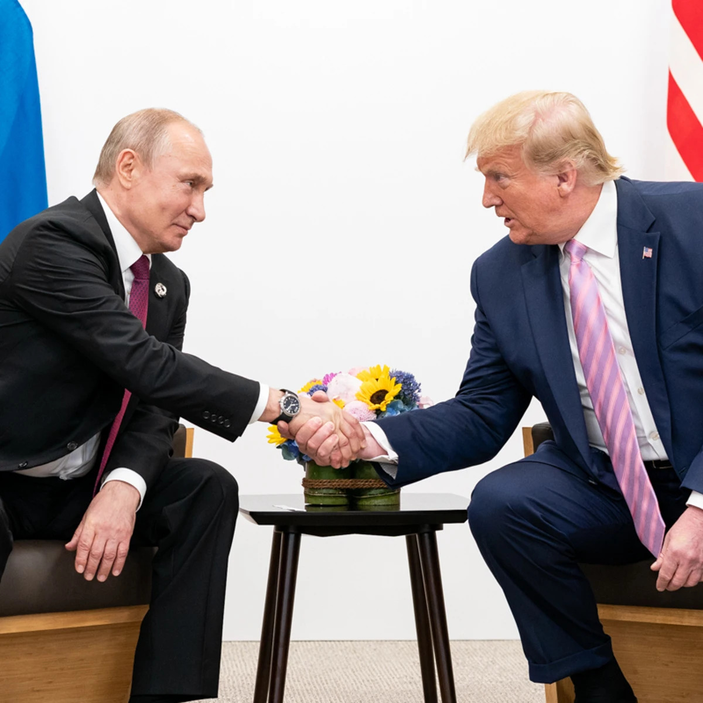

Nuevo diálogo entre Trump y Putin en el marco de la guerra en Ucrania
El presidente de Estados Unidos, Donald Trump, y Vladimir Putin, mantuvieron una conversación telefónica con el objetivo de avanzar hacia una posible resolución del conflicto.
Falleció el Papa Francisco a los 88 años
El Papa Francisco falleció este lunes 21 de abril de 2025 a los 88 años en la residencia Casa Santa Marta, en el Vaticano.
Trump redobla la presión sobre China con aranceles acumulativos de hasta 245%
La administración de Donald Trump ha intensificado su ofensiva comercial contra China con la imposición de una nueva batería de aranceles.
China intensifica la guerra comercial con EE.UU. y bloquea nuevas entregas de Boeing
En un nuevo capítulo de la creciente tensión comercial entre China y Estados Unidos, el gobierno chino ordenó a sus aerolíneas suspender la recepción de nuevos aviones Boeing.
Trump y Bukele mantuvieron una reunión clave en la Casa Blanca
El presidente de Estados Unidos, Donald Trump, recibió este lunes al mandatario salvadoreño Nayib Bukele en la Casa Blanca.
Ecuador reelige a Daniel Noboa en una votación marcada por la tensión política
En una jornada electoral clave para el futuro político del país, Daniel Noboa fue reelegido presidente de Ecuador con el 55,7% de los votos.